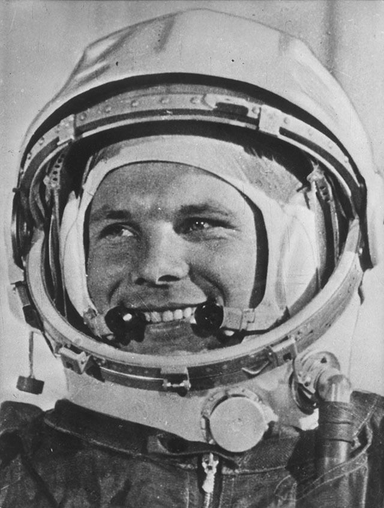

Юрий Гагарин
Первый человек в мировой истории, совершивший полёт в космическое пространство.

«Поехали!»
12 апреля 1961 года мир затаил дыхание. С космодрома Байконур стартовала ракета с кораблём «Восток-1». На борту находился 27-летний военный лётчик Юрий Гагарин. Его полёт длился всего 108 минут, но эти минуты навсегда изменили историю человечества.
Первый шаг к звёздам
Гагарин совершил один виток вокруг Земли и успешно приземлился в Саратовской области. Весь мир рукоплескал советскому космонавту. Его знаменитое слово «Поехали!», сказанное перед стартом, стало символом начала космической эры.
А ты знал?
Во время спуска на парашюте Гагарин приземлился в поле, где его встретили обычная женщина и её внучка. Они очень испугались, увидев человека в ярко-оранжевом скафандре.